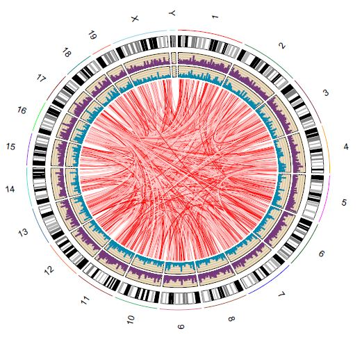

This program is powered by RCircos.
Required R packages (our program will check for the presence of these packages and install/load them automatically if not present):
- argparse, RCircos, biovizBase, rtracklayer
The program also require a python script “bam2tab.py” (already in /bin/ folder) to call coverage from BAM2X
We will use the script “Plot_Circos.R” for this purpose.
usage: Plot_Circos.R [-h] [-g GENOME] [-b BIN] [-o OUTPUT]
interaction part1 part2
positional arguments:
interaction the interaction file,[required]
part1 aligned BAM file for part1,[required]
part2 aligned BAM file for part2,[required]
optional arguments:
-h, --help show this help message and exit
-g GENOME, --genome GENOME
genome information, choice: mm9/mm10/hg19 et.al.,
[default: mm9]
-b BIN, --bin BIN window size for the bins for coverage calling, [default: 100000.0]
-o OUTPUT, --output OUTPUT
output pdf file name, [default: Interactome_view.pdf]
Note
part1, part2 BAM files are the ones generated from Step5:Stitch-seq_Aligner.py of the pipeline; Interaction txt file is the output of Step6:Select_strongInteraction_pp.py.
Example code:
Rscript Plot_Circos.R GGCG_interaction_clusters.txt
sort_Paired1_fragment_GGCG.bam sort_Paired2_fragment_GGCG.bam
-b 100000 -o Interactome_GGCG.pdf
Result figure:
Explanation:
This file can be edited directly through the Web. Anyone can update and fix errors in this document with few clicks -- no downloads needed.
For an introduction to the documentation format please see the reST primer.